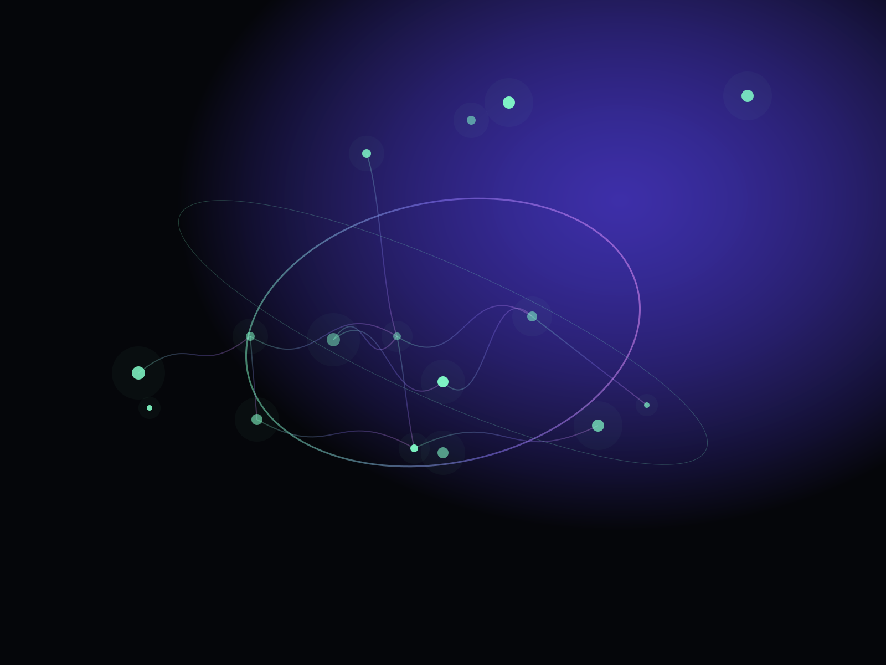

Observe
Capture the full execution path, evaluation signals, cost, latency, and user outcome.
Aurora is an infrastructure layer for teams shipping agentic products. Route models, observe behavior, enforce policy, and evolve workflows from one intelligent control plane.

Choose models by quality, cost, latency, policy, region, and live evaluation signals.
See prompts, tools, branches, retries, failures, and outcomes as one coherent trace.
Attach guardrails to workflows, environments, teams, and individual execution paths.
Aurora turns distributed model calls and agent behavior into a system your team can understand, compare, and improve.
See the product →
“The point isn’t to pick one model forever. It’s to build a system that keeps making the right choice.”
Capture the full execution path, evaluation signals, cost, latency, and user outcome.
Apply routing logic, policy, live quality thresholds, and environmental context.
Promote better behavior without rebuilding every workflow from scratch.